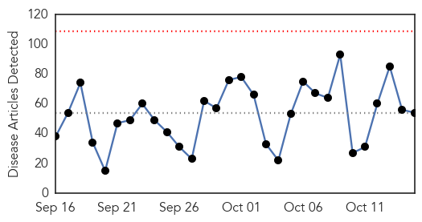
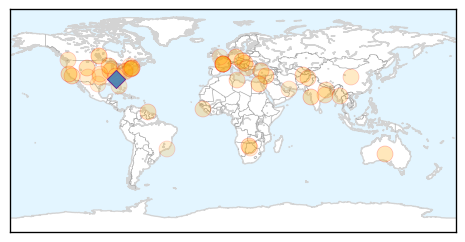
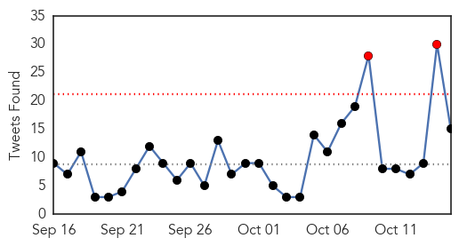
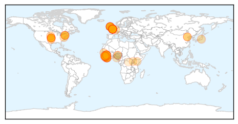

Unknown
30-Day Web Trend
0 alerts, 0 warnings

30-Day Twitter Trend
2 alerts, 0 warnings

Article Locations
Article Confidences

Top Articles:
- 0.939
- More corruption within the CDC: Lyme Disease Community blows the whistle -- Health & Wellness -- Sott.net
- 0.931
- Study Links Flu Vaccine to Short-Term Drop in Stroke Risk
- 0.923
- Health Ministry stymied by mystery illness spreading across Assiut
- 0.917
- Chicago Tribune
- 0.917
- Chicago Tribune
- 0.917
- Chicago Tribune
- 0.917
- Chicago Tribune
- 0.915
- Salmonella outbreaks here and abroad: Cucumbers, small turtles and turkey
- 0.914
- Are London’s Lyme disease hotspots safe and is a vaccine on the horizon?
- 0.912
- Almost 70 people infected with scabies during outbreak at Burlington hospital
- 0.907
- Your Northwoods News Leader and NBC Affiliate
- 0.894
- Botswana becoming shorter and duller – blame it on Water Utilities Corporation
- 0.894
- Staff deaths in India's largest TB hospital underreported
- 0.888
- Vesicular stomatitis virus hit Fremont County; CWC taking precautions
- 0.803
- Strengthened Health Services in District Hospital Improves Public Health in Balkh Province - Afghanistan
- 0.797
- Walgreens, AmeriCares deliver flu shot to 5,000 uninsured patients
- 0.796
- Hospitals Are Moving (Slowly) to Electronic Medical Records
- 0.786
- Tomato Grower Added to Chipotle Salmionella Lawsuit
- 0.786
- Why Is the CDC Allowing a Private Group to Determine Federal Policy on Lyme Disease?
- 0.767
- Lyme disease cases remains high in Pennsylvania
- 0.762
- Health ministry pushing to arrest maternity deaths –with help of media, public at large
- 0.727
- Top New York restaurant group to eliminate tipping
- 0.727
- Pistorius to be released from prison, placed under house arrest
- 0.727
- Obama to maintain 9,800 troops in Afghanistan ‘through most of 2016’
- 0.726
- Cryptosporidium cases continue to grow in Knox County
- 0.724
- Two new suspects identified over 1988 Lockerbie bombing
- 0.724
- Turkey arrests 10 more over 'Ankara bombing tweets'
- 0.724
- Guinean opposition leader Diallo pulls out of vote, claims 'widespread fraud'
- 0.724
- Burma signs ceasefire deal with eight rebel factions
- 0.724
- Condé poised to win second term as Guinea president
- 0.724
- Air France suspends five workers over shirt-ripping attack
- 0.700
- Indian Express
- 0.687
- In Celebration of Dental Hygiene Month, Dr. Parviz Roshan Invites Gum Disease Sufferers to Experience Minimally-Invasive Laser Dentistry in Vancouver, BC
- 0.684
- Vaccine-derived polio case raises ugly head in Laos
- 0.682
- Campaign art: Fighting neglected tropical diseases one step at a time
- 0.653
- Facebook app tracks infectious diseases
- 0.643
- Doctors: It's never too early to get a flu shot
- 0.634
- Migration: Thousands crossing the Balkans exposed to unnecessary suffering
- 0.626
- New health director takes the helm
- 0.613
- Drinking water advisories hit more than half of Manitoba First Nations
- 0.608
- Experts call for awareness, prevention against fluorosis, arsenic poisoning
- 0.575
- Community dentists promoting water fluoridation
- 0.574
- Rise in Mosquito Population Raises Concern for Transmitted Virus
- 0.567
- Battling the migraine monster
- 0.565
- Ministry warns health practitioners against issuing fake sick leave
- 0.561
- VA partners with Walgreens for free flu shots
- 0.558
- Brazilian researcher details efforts to find future-generation smallpox vaccines
- 0.545
- Should the Annual Physical Be Scrapped?
- 0.526
- 90% of Saskatchewan First Nations have faced bad drinking water
- 0.523
- Despite benefits, not enough people washing their hands with soap
Showing top 50 articles...
Top Tweets:
- 0.973
- .@cakeupfacexo Flu vax protects against A & B viruses. Flu vaccine helps protect against flu.
- 0.938
- .@Mrspoofa Flu vaccines cannot cause the flu. However, some people experience mild flu-like symptoms after vaccination notimeforflu
- 0.875
- .@cheryl888888 Fluvax cannot cause flu. Some people experience mild flu-like symptoms after vaccination. notimeforflu
- 0.823
- RT: Todos hablando de qué van a hacer en Las Vegas. Yo lo único que quiero es ir a comprar cosas a la tienda de El Precio de…
- 0.799
- RT: El HR de Encarnación en la 6ta viajó 457 pies, 2do más largo en postemp desde que ESPN comenzó medirlos en 2009 (Napoli, 460…
- 0.739
- .@Mrspoofa Nasal spray is a live attenuated vaccine, injected flu shot is a killed virus vaccine notimeforflu
- 0.699
- RT: En El Precio de la Historia hay gente tipo "Experto en cajitas musicales del Holocausto".Y yo que creí que ser WeddingPlanne…
- 0.688
- En el precio de la historia,cualquier duda con las firmas llaman a un grafólogo forense,ah ok.
- 0.644
- .@curly1603 You can still get a flu shot if you are sick without a fever. notimeforflu @MinuteClinic
- 0.637
- Flu viruses are spread mainly by droplets made when people with flu cough, sneeze or talk notimeforflu
- 0.628
- In addition to getting a flu vaccine, protect your family from flu by practicing good health habits: http://t.co/dYPFAhe70n notimeforlflu
- 0.617
- CDC does not recommend one flu vaccine over the other this season. The important thing is to get a flu vaccine every year. notimeforflu
- 0.613
- RT: Los han ganado 9 de sus últimos 10 partidos en los que enfrentan la eliminación desde la Serie de campeonato en 1985.
- 0.590
- RT: In addition to getting a flu vaccine, protect your family from flu by practicing good health habits: http://t.co/dYPFAhe70n n…
- 0.574
- For more flu prevention tips, follow. notimeforlfu
- 0.536
- .@mulysa32 you can get a flu shot if you have a cold without a fever, or if you have another mild illness.notimeforflu
- 0.523
- Que versionen una canción de luis silva en guaracha es de los peores daños que se le hacen al país
Ebola
30-Day Web Trend
3 alerts, 0 warnings

30-Day Twitter Trend
2 alerts, 0 warnings

Article Locations
Article Confidences
Top Articles:
- 1.000
- Ebola can survive in semen for months – CDC — RT USA
- 1.000
- Ebola persists in semen for up to nine months
- 1.000
- British nurse Pauline Cafferkey who had Ebola is critically ill
- 1.000
- Sexual transmission of Ebola virus in Liberia confirmed using genomic analysis
- 1.000
- Ebola Survivor From Scotland Is Critically Ill
- 1.000
- Ebola lingers in semen for months, studies confirm
- 1.000
- Scottish Nurse Who Had Ebola Is Back in Hospital and Critically Ill
- 1.000
- Neuro complications cited in UK nurse's Ebola case
- 1.000
- Male Survivors Can Carry Ebola for up to Nine Months
- 1.000
- The Return of Ebola? What You Need to Know
- 0.999
- Study: Ebola Virus Can Hide in Some Survivors for Longer Than Previously Thought
- 0.999
- Can Ebola Survive In Semen And Transmit Sexually?
- 0.999
- Scottish nurse now 'critically ill' after she recovered from Ebola
- 0.999
- Study: Ebola in male survivors can survive up to 9 months
- 0.999
- How does the Ebola virus spread? Fresh fears after critically ill British nurse diagnosed twice
- 0.999
- Ebola Infection More Stubborn than Believed, Reappearing in Sperm and Elsewhere
- 0.999
- Sexual Transmission of Ebola Virus in Liberia Confirmed Using Genomic Analysis
- 0.999
- Ebola-stricken nurse Pauline Cafferkey 'critically ill' after condition worsens
- 0.999
- Sexual transmission of Ebola virus in Liberia confirmed using genomic analysis
- 0.999
- Johnson & Johnson : Announces Start of Clinical Trial of Ebola Vaccine Regimen in Sierra Leone
- 0.999
- iafrica.com British Ebola nurse 'critically ill'
- 0.998
- Revealed! Ebola Can Live Up To Nine Months In Survivors
- 0.998
- British Ebola nurse now 'critically ill': Hospital
- 0.998
- Does 'reactivated' Ebola pose a threat?
- 0.998
- Infection control experts: U.S. isn't ready to handle an epidemic
- 0.998
- Study indicates Ebola may persist in semen for months
- 0.998
- Study indicates Ebola may persist in semen for months
- 0.998
- Scottish nurse in critical condition after rare case of Ebola relapse
- 0.997
- The lingering symptoms of Ebola survivors
- 0.997
- Ailing Ebola nurse in UK may be rare case of relapse
- 0.996
- Ebola Cured Nurse Now In Critical Condition
- 0.996
- UK Ebola relapse case takes virus specialists to uncharted waters
- 0.996
- Ebola lingers in semen for nine months
- 0.995
- Rapid decline of nurse 'cured' of Ebola staggers experts
- 0.995
- First ebola ‘EBOVAC-Salone’ vaccines given out in Sierra Leone
- 0.994
- Does 'Reactivated' Ebola Pose a Threat or Risk of Transmission?
- 0.994
- Addressing Ebola Waste Disposal Challenges for US Hospitals
- 0.994
- Evidence Confirms Ebola Persists in Semen for 6 Months
- 0.991
- UK's first Ebola patient relapses to critical condition -
- 0.987
- Ebola RNA Persistence in Semen of Ebola Virus Disease Survivors — Preliminary Report — NEJM
- 0.987
- William P.J. Lynch Jr.comWilliam P.J. Lynch Jr.com
- 0.986
- First Case of Sexually Transmitted Ebola Just Confirmed
- 0.983
- Ebola still lingers in semen for months, scientists find
- 0.981
- The First Case Of Sexually Transmitted Ebola Was Just Reported
- 0.980
- Ebola returns to ‘cured’ nurse
- 0.977
- More Ebola nurse close contacts identified
- 0.971
- Ebola Survivor Seriously Ill Due to Virus' Long- Term Effects : News : Realty Today
- 0.970
- Chinese company intends to build plant to produce Ebola vax
- 0.970
- British nurse suffering Ebola relapse critically ill
- 0.965
- UK Nurse With Relapsed Ebola 'Critically Ill'
Showing top 50 articles...
Top Tweets:
- 0.998
- Ebola Virus Disease: An Evolving Epidemic - http://t.co/6sixDTEZfs ebola
- 0.997
- Persistent virus in people recovering from Ebola virus disease - http://t.co/L5a325zEBj ebola
- 0.991
- Sexual transmission of Ebola virus in Liberia confirmed using genomic analysis - Medical Xpress http://t.co/faWfRwL5Ea ebola EVD
- 0.991
- Ebola virus nurse now critically ill - http://t.co/kR7FhSEUDs ebola
- 0.988
- Much still unknown on Ebola virus - http://t.co/fBaAaCtrCy ebola
- 0.988
- Ebola is Back - https://t.co/CzQXSmQruM ebola
- 0.983
- UK Ebola “Relapse” Case Takes Virus Specialists to Uncharted Waters - http://t.co/Y6KUg0YMkZ ebola
- 0.983
- UK Ebola "relapse" case takes virus specialists to uncharted waters - http://t.co/7LAC7InXdk ebola
- 0.980
- Study: Most health workers infected in non-Ebola settings - CIDRAP http://t.co/LmPKyca4BP ebola EVD
- 0.978
- Ebola study finds women in Guinea who appear immune to the virus - http://t.co/bSIWepgdXA ebola
- 0.977
- Ebola RNA Persistence in Semen of Ebola Virus Disease Survivors — Preliminary Report sexualtransmission http://t.co/ir3a0obdH7
- 0.976
- WHO: Ebola virus found in male survivors 9 months after symptoms - http://t.co/AY0LW2idDa ebola
- 0.976
- Sierra Leone goes four weeks without new Ebola cases: official - http://t.co/i2avTLLgvo ebola
- 0.975
- WHO: Ebola virus found in male survivors 9 months after symptoms - CNN http://t.co/GR6LFOk55R ebola EVD
- 0.967
- Scottish ebola nurse's condition now 'ctitically ill' - http://t.co/6I24P39hxP ebola
- 0.965
- Ebola virus persists in body fluids of survivors for months – UN health agency - http://t.co/xc5mPdiGD8 ebola
- 0.961
- PUBLIC HEALTH - Rappler http://t.co/XvJpU2GV7U ebola EVD
- 0.960
- How does the Ebola virus spread? Fresh fears after critically ill British nurse diagnosed twice - http://t.co/TGU6duMWue ebola
- 0.960
- Ebola study finds women in Guinea who appear immune to the virus - The Guardian http://t.co/iXoxa0niSt ebola EVD
- 0.950
- Don't Panic: First Case of Sexually Transmitted Ebola Just Confirmed - From Quarks to Quasars http://t.co/4CYSYxIGzk ebola EVD
- 0.948
- Ebola virus can stick around up to 9 months in men - CBS News http://t.co/ehgga5Cpfa ebola EVD
- 0.943
- Ebola Nurse 'Critically Ill' - http://t.co/JB6nY9ISWu ebola
- 0.937
- Neuro complications cited in UK nurse's Ebola case - http://t.co/lWlRSdLLrG ebola
- 0.934
- Ebola Sexual Transmission 6 Months After Illness Confirmed - http://t.co/l5IU3Q01TG ebola
- 0.930
- Ailing Ebola Nurse in UK May Be Rare Case of Relapse - http://t.co/E6u49uJhZr ebola
- 0.929
- More Ebola nurse close contacts identified - http://t.co/fqbGTOxnVp ebola
- 0.927
- Ebola can survive in semen for months – CDC - http://t.co/zAsggc0mHz ebola
- 0.926
- British nurse suffering Ebola relapse critically ill - http://t.co/14OVpLZbqo ebola
- 0.925
- Ebola virus lives on in semen months after recovery, new research finds - http://t.co/FAbxAvuWGm ebola
- 0.924
- Ebola virus 'can live in semen for up to nine months' - http://t.co/7d0zMd8Qn3 ebola
- 0.920
- Ebola nurse becomes critically ill - http://t.co/yQNL4X4IAF ebola
- 0.920
- Condition of Scottish Nurse Suffering From Ebola Relapse Deteriorates - http://t.co/dRXyEk8Sxc ebola
- 0.919
- UK Nurse With Ebola Critically Ill Again - http://t.co/Hmv1i7IyvE ebola
- 0.909
- Scottish Ebola nurse now 'critically ill' - http://t.co/jU7gEg1tYv ebola
- 0.909
- Ebola Nurse Cafferkey Now 'Critically Ill' - http://t.co/IG2XIS3M7u ebola
- 0.908
- MSF President on Lessons from the Ebola Epidemic - BBC News http://t.co/OPpTn9Bmz5 ebola EVD
- 0.901
- WHO: Die Welt ist auf neue Epidemie wie bei Ebola nicht vorbereitet - DIE WELT http://t.co/fAm7RxqLTO ebola EVD
- 0.895
- Scottish Nurse Who Had Ebola Is Back in Hospital and Critically Ill - http://t.co/PacD2TeOFm ebola
- 0.893
- The first case of sexually transmitted Ebola has been confirmed - http://t.co/TEkSxxigGO ebola
- 0.880
- Is Ebola an STI? Virus can survive in semen for up to nine months - http://t.co/ziNvOks9zE ebola
- 0.876
- Tracy Morgan: 'I'm now 100% Ebola-free!' - USA TODAY http://t.co/FN6DSfv2BM ebola EVD
- 0.874
- Scottish nurse who recovered from Ebola critically ill - http://t.co/kfssR6L5wy ebola
- 0.869
- Red Alert — Ebola is Back - http://t.co/tDNFkkuZsm ebola
- 0.868
- Ebola's persistence and resistance could overwhelm poor countries - http://t.co/8Dxcd1u9vQ ebola
- 0.867
- Study indicates Ebola may persist in semen for months - http://t.co/RzKsJ3vslf ebola
- 0.866
- Molecular Evidence of SexualTransmission of Ebola Virus http://t.co/3mfz0fr9hR
- 0.863
- Scottish nurse who recovered from Ebola critically ill - USA TODAY http://t.co/tUqc7BoKQR ebola EVD
- 0.860
- Scottish Nurse Who Had Ebola Is Back in Hospital and Critically Ill - New York Times http://t.co/0QzqHvjGwE ebola EVD
- 0.848
- Ebola can linger in survivors for 9 months: research - http://t.co/YRCSwlKr15 ebola
- 0.845
- Study: Ebola in male survivors can survive up to 9 months - http://t.co/Ey7BoxYT2q ebola
Showing top 50 tweets...